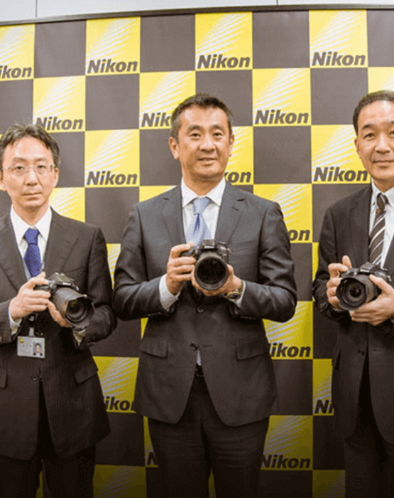

北京“尼康影像天地”展示厅及尼康售后服务中心，于2015年6月10日正式于新址开店，以全新面貌继续为尼康用户及广大摄影爱好者提供更精彩的体验空间及更周到的服务感受。新的“尼康影像天地”展示厅及售后服务中心的空间更为宽阔，环境也更为整洁安静，硬件设施方面也全面升级，有利于为广大用户提供更加周到、便捷的服务。

关于我们
2013-03-09
尼康照片分享服务“尼康影像馆”新版上线
2016-02-25
“NIKKOR.com”全球品牌网站更新
2016-02-23
全新升级的专业摄影体验 尼康出展上海P&I 2016
PRODUCT INDEXING
尼康 轻便型数码相机
产品简介
DL24-85F/1.8-2.8新品
查看详情
产品宣传册
从这些丰富多彩的宣传册中了解更多关于尼康产品的信息
购买地区
全国各省地区科技有限公司
(尼康典范店)
软件、固件，说明书下载
你可下载数码照相机及其它影像设备的说明书、软件和固件
高性能自动对焦和更强的连拍能力，为您带来华丽的图像。
经过高端水平的严谨设计，D7200 DX格式数码单反相机进一步激发您的创作力。AF传感器模块带来了更强大的对焦性能，同时相机的缓冲容量增加，提高了连拍模式的拍摄次数。内置Wi-Fi®功能，可以即时、轻松地分享图片和动画，配备EXPEED 4影像处理器和无低通光学滤波器，即使在暗光场景下也呈现低噪点。相机的多种多样功能，更便于创建全高清动画。灵活拍摄，创意思维。
- 类型单镜头反光数码相机
- 镜头卡口Nikon F卡口（带AF藕合器和AF触点）
- 有效视角尼康DX格式；35mm[135]格式下焦距相当于FX格式视角镜头焦距的近1.5倍
- 影像传感器DX
- 影像传感器类型 CMOS
- 影像传感器尺寸约23.5mm x15.6mm
- 总像素数约2,472万
- 有效像素数约2,416万
- 灰尘减少功能 清洁影像传感器
- 图像尺寸（像素）
DX（24×16）图像区域6000×4000(L) 4496×3000(M) 2992×2000(S)；
1.3×（18×12）图像区域4800×3200(L) 3600×2400(M) 2400×1600(S)；
动画即时取景中拍摄的图像区域为DX（24×16）的照片6000×3368(L) 4496×2528(M) 2992×1680(S)；
动画即时取景中拍摄的图像区域为1.3×（18×12）的照片4800×2696(L) 3600×2024(M) 2400×1344(S) - 文件格式NEF （RAW）：12 位或14 位无损压缩或压缩；
JPEG：兼容JPEG-Baseline，压缩比（约）为精细（1:4）、标准（1:8）或基本（1:16）（文件大小优先）；
最佳品质压缩可用；
NEF（RAW）+JPEG：以NEF（RAW）和JPEG 两种格式记录单张照片 - 文件格式NEF （RAW）：12 位或14 位无损压缩或压缩；
JPEG：兼容JPEG-Baseline，压缩比（约）为精细（1:4）、标准（1:8）或基本（1:16）（文件大小优先）；
最佳品质压缩可用；
NEF（RAW）+JPEG：以NEF（RAW）和JPEG 两种格式记录单张照片 - 优化校准系统标准、自然、鲜艳、单色、人像、风景、平面；
可修改所选优化校准；
可保存自定义优化校准 - 存储介质SD 存储卡以及兼容UHS-I 的SDHC 和SDXC 存储卡
- 双插槽
双SD卡插槽，插槽2 可用作额外空间或备份存储空间，也可用于分别存储使用NEF+JPEG 所创建的图像；
照片可在两张卡之间互相复制。 - 文件系统 DCF 2.0、DPOF、Exif 2.3、PictBridge
- 取景器 眼平五棱镜单镜反光取景器
- 画面覆盖率DX （24×16）影像区域：约100%（垂直与水平）、1.3x（18x12）影像区域：约97%（垂直与水平）
- 放大倍率 约0.94 倍（50mm f/1.4 镜头设为无穷远；屈光度为–1.0m⁻¹）
- 视点距离取景器接目镜表面中心约19.5mm （屈光度为–1.0m⁻¹）
- 屈光度调节 –2 至+1m⁻¹
- 对焦屏 B 型光亮磨砂对焦屏Mark II，带有AF 区域框（可显示取景网格）
- 反光板 即时返回型
- 景深预览按下景深预览按钮可将镜头光圈缩小为用户（A 和M模式）或照相机（其他模式）选择的数值
- 镜头光圈 即时返回型、电子控制
- 兼容的镜头
兼容AF尼克尔镜头，包括G型和D型镜头（PC镜头受到某些限制）、DX 镜头、AI-P 尼克尔镜头以及非CPU AI 镜头（仅限于A 和M 模式）。不能使用IX 尼克尔镜头、用于F3AF 的镜头以及非AI 镜头。
镜头的最大光圈为f/5.6 或以上时可使用电子测距仪（使用最大光圈为f/8 或以上的镜头时，电子测距仪支持中央1 个对焦点）。 - 类型电子控制纵走式焦平面快门
- 速度 1/8000–30 秒（以1/3、1/2EV 为步长进行微调）、B 门、遥控B 门、X250
- 同步闪光速度X=1/250 秒；在1/320 秒或以下速度时，与快门保持同步（速度为1/250至1/320 秒之间时闪光范围缩小）
- 释放模式S（单张拍摄）、CL （低速连拍）、CH（高速连拍）、Q（安静快门释放）、自拍、MUP（反光板弹起）
- 每秒幅数 （近似值）
影像区域选为DX（24×16）时记录的JPEG 和12 位NEF （RAW）图像 CL：1–6幅/秒 CH：6幅/秒
影像区域选为1.3× （18×12）时记录的JPEG 和12 位NEF（RAW）图像 CL：1–6幅/秒 CH：7幅/秒
影像区域选为DX（24×16）时记录的14 位NEF（RAW）图像 CL：1–5幅/秒 CH：5幅/秒
影像区域选为1.3×（18×12）时记录的14 位NEF（RAW）图像 CL：1–6幅/秒 CH：6幅/秒
*即时取景中的最高每秒幅数为3.7fps。 - 自拍2 秒、5 秒、10 秒、20 秒；以0.5、1、2 或3 秒为间隔曝光1–9 次
- 遥控模式遥控延迟、快速响应遥控、遥控弹起反光板
- 测光模式使用2016 像素RGB 感应器的TTL 曝光测光
- 测光方法矩阵：3D彩色矩阵测光II（G型和D型镜头）；彩色矩阵测光II（其他CPU 镜头）；若用户提供镜头数据，彩色矩阵测光适用于非CPU 镜头；中央重点：约75%的比重集中在画面中央8mm直径圈中，或可更改为集中在画面中央6、10 或13mm直径圈中，或者平均分布于整个画面上（非CPU 镜头使用8mm 直径圈）；集中在以所选对焦点（使用非CPU 镜头时为中央对焦点）为中心的3.5mm 直径圈中（大约是整个画面的2.5%）
- 范围（ISO 100，f/1.4镜头，20°C）矩阵或中央重点测光：0 至20EV 点测光：2 至20EV
- 曝光测光耦合器 CPU 和AI 结合
- 模式自动模式（自动；自动（闪光灯关闭））；带有柔性程序的程序自动（P）；快门优先自动（S）；光圈优先自动（A）；手动（M）；场景模式（人像；风景；儿童照；运动；近摄；夜间人像；夜景；宴会/室内；海滩/雪景；日落；黄昏/黎明；宠物像；烛光；花；秋色；食物）；特殊效果模式（夜视；彩色素描；模型效果；可选颜色；剪影；高色调；低色调）；U1（用户设定1）；U2（用户设定2）
- 曝光补偿 在P、S、A 、M、 SCENE和夜视模式下可以1/3 或1/2EV 为增量在–5 至+5EV 之间进行调整
- 曝光锁定使用AE-L/AF-L按钮将光亮度锁定在所测定的值上
- ISO感光度（推荐曝光指数）ISO感光度（推荐曝光指数）
以1/3或1/2EV为步长在ISO 100–25600之间进行微调。
也可在ISO 25600的基础上增加约1 或2EV（相当于ISO 102400）；
可使用自动ISO 感光度控制 - 动态D-Lighting 自动、极高、高、标准、低、关闭
- 自动对焦系统 尼康Multi-CAM3500II 自动对焦感应器模组，具备TTL 相位侦测、微调、51个对焦点（包括15 个十字型感应器；其中1 个感应器支持f/8）和AF 辅助照明器（范围约为0.5-3m）
- 侦测范围–3 至+19EV （ISO 100、20 ℃）
- 镜头伺服自动对焦（AF）：单次伺服AF（AF-S）；连续伺服AF（AF-C）；自动AF-S/AF-C 选择（AF-A）；根据拍摄对象的状态自动启用的预测对焦跟踪；手动对焦（M）：可以使用电子测距仪
- 对焦点 可从51 或11 个对焦点中选择
- AF区域模式单点AF；动态区域AF（9、21或51个对焦点）、3D跟踪、自动区域AF
- 对焦锁定半按快门释放按钮（单次伺服AF）或按下AE-L/AF-L 按钮可锁定对焦
- 内置闪光灯 自动、人像、儿童、特写、夜间人像、聚会/室内、宠物照片、彩色素描：自动弹出型自动闪光；P、S、A、M、食物：按下释放按钮手动弹出闪光灯
- 闪光指数 约12 ；手动闪光时12 （m， ISO 100， 20 ℃）
- 闪光控制TTL：使用2016 像素RGB 感应器的i-TTL闪光控制适用于内置闪光灯；针对数码单镜反光照相机的i-TTL 均衡补充闪光配 合矩阵测光或中央重点测光一起使用，针对数码单镜反光照相机的标准i-TTL 补充闪光则配合点测光一起使用
- 闪光模式 自动、自动带防红眼、自动慢同步、自动慢同步带防红眼、补充闪光、防红眼、慢同步、慢同步带防红眼、后帘慢同步、后帘同步、关闭；支持自动FP 高速同步
- 闪光补偿 以1/3 或1/2EV 为增量在–3 至+1EV 之间进行微调
- 闪光预备指示灯 在内置闪光灯或另购的闪光灯组件充满电时点亮；当闪光灯以全光输出后闪烁
- 配件热靴 带有安全锁及同步和数据接点的ISO 518 热靴
- 尼康创意闪光系统(CLS)支持尼康创意闪光系统；指令器模式选项可用
- 同步端子AS-15 同步端子适配器（另购）
- 白平衡 自动（2 种类型）、白炽灯、荧光灯（7 种类型）、晴天、闪光灯、阴天、背阴、手动预设（最多可保存6 个值，点白平衡测量在即时取景过程中可用）、选择色温（2500K–10000K），全部都可进行微调
- 包围类型 曝光、闪光灯、白平衡和动态D-Lighting
- 模式照片即时取景、动画即时取景
- 镜头伺服自动对焦（AF）：单次伺服AF（AF-S）；全时伺服AF（AF-F）；手动对焦（M）
- AF区域模式脸部优先AF、宽区域AF、标准区域AF、对象跟踪AF
- 自动对焦 可在画面的任何位置进行对比侦测AF（选择了脸部优先AF 或对象跟踪AF 时，照相机自动选择对焦点）
- 测光使用主图像传感器的TTL 曝光测光
- 测光方法矩阵测光或中央重点测光
-
画面尺寸（像素）和帧频
1920×1080 ； 60p （逐行）、50p、30p、25p、24p
1280×720 ；60p、50p、30p、25p 及24p 时的实际帧频分别为59.94、50、29.97、25 及23.976 幅/ 秒；选项同时支持★ 高和标准图像品质
仅当动画拍摄菜单中的影像区域选为1.3×（18×12）时，1920×1080， 60p和50p 才可用 - 文件格式 MOV
- 视频压缩 H.264/MPEG-4 视频编码
- 音频录制格式 线性PCM
- 音频录制设备内置立体声麦克风或外置立体声麦克风；可调节灵敏度
- 其他选项 索引标记、定时拍摄
- 显示屏尺寸8cm（约3.2 英寸）
- 显示屏类型 约170°可视角度的TFT 显示屏，约100% 画面覆盖率，可进行亮度调节
- 显示屏分辨率约122.9 万画点（VGA ； 640 × 4 × 480=1228800画点）
- 播放 全屏和缩略图（4 张、9 张或72 张图像或日历）播放、变焦播放、动画播放、照片和/ 或动画幻灯播放、 直方图显示、加亮显示、照片信息、自动旋转图像
- USB 高速USB ；建议连接至内置USB 端口
- HDMI输出 C 型HDMI 接口
- 音频输入 立体声迷你针式插孔（3.5mm直径；支持插入式电源）
- 音频输出立体声迷你针式插孔（3.5mm直径）
- 配件端子无线遥控器：WR-1 和WR-R10 （另购）； 遥控线：MC-DC2 （另购）
- 标准 IEEE 802.11b，IEEE 802.11g
- 操作频率 2412–2462 MHz (通道1–11)
- 范围（视线）约30m （假定无干扰；范围可能根据测位状态和有无障碍物而异）
- 数据速率 54 Mbps 根据IEEE 标准的最大逻辑数据速率。实际速率可能会有所差异。
- 验证开放式、WPA2-PSK
- 无线设定 支持WPS
- 访问协议 基础结构模式
- 操作 NFC论坛类型3 标签
- 支持的语言支持的语言 阿拉伯语、孟加拉语、保加利亚语、中文（简体中文和繁体中文）、捷克语、丹麦语、荷兰语、英语、 芬兰语、法语、德语、 希腊语、印地语、匈牙利语、印尼语、意大利语、日语、韩语、马拉地语、挪威语、波斯语、波兰语、葡萄牙语（葡萄牙和巴西）、罗马尼亚语、俄语、塞尔维亚语、西班牙语、瑞典语、 泰米尔语、泰卢固语、泰语、土耳其语、乌克兰语及越南语
- 电池 1块EN-EL15 锂离子电池组
- 电池匣 另购的MB-D15多功能电池匣可容纳1块尼康EN-EL15 锂离子电池组或6 节AA 碱性电池、镍氢电池或锂电池
- 电源适配器 EH-5b电源适配器；需要EP-5B照相机电源连接器（另购）
- 三脚架连接孔 1/4英寸(ISO 1222)
- 尺寸（宽×高×厚）约135.5 × 106.5 × 76mm
- 重量 约765g（带电池和存储卡，但不包括机身盖）；约675g（仅照相机机身）
- 温度 0 ℃至40 ℃
- 湿度湿度 85%或以下（不结露）
- 附带配件 锂离子电池组EN-EL15、充电器MH-25a、USB 连接线UC-E17、照相机背带AN-DC1 BK、 机身盖BF-1B、接目镜盖DK-5、橡胶接目镜罩DK-23
提供配件
另购配件
尼克尔镜头帮助获得高分辨率和优美虚化背景
致金DL24-85 F/1.8-2.8能够拍摄出拥有高分辨率和平滑自然的虚化效果的图像，获得精彩的微距图像和人像。它的光学系统包括HRI镜片和模铸玻璃非球面镜片，即兴拍摄时也能获得良好的图像质量和丰富细节。
尼康摄影欣赏
照片墙


尼康摄影欣赏
照片墙


尼康摄影欣赏
照片墙

尼康摄影欣赏
照片墙
PRODUCT INDEXING
产品引索
SERVICE PROJECT
服务项目
-
尼康影像天地
尼康影像天地官方网站
-
延迟保修期服务
在“我的尼康”注册并登陆产品，即可享2年延保
-
Tmall尼康官方旗舰店
尼康在Tmall(天猫)的官方旗舰店
-
全国摄影培训讲座
尼康全国摄影培训讲座全新启程
尼康D7200产品简介
看见，超出想象的世界
联系我们
Nikon 影像从心
尼康创立于1917年，至今已有90多年历史在“信赖和创造”的企业理念引导下，积极开展以光学产品的开发和销售为主的各项事业，并以此奠定了发展基础。
新浪尼康官方微博/ 微信尼康官方账号/
YOUKU尼康官方网站
更多尼康网站
- 尼康总部
- NPS尼康专业服务（中国）
- NPS尼康专业服务（全球）
- 尼康全球
- 尼康集团
- 尼康影像
联系我们
支持中国大陆地区固话、手机的用户拨打，用户只需支付当地话费，长途话费由尼康公司支付
2016尼康映像仪器销售（中国）有限公司
400-820-1665
nikon.com.cn/
©2016 尼康映像仪器销售（中国）有限公司
隐私管理 联系我们 ICP 06000896